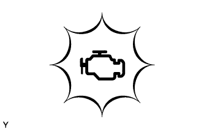
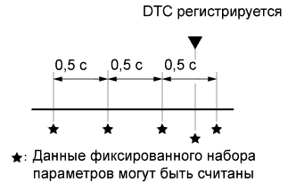

СИСТЕМА АВТОМАТИЧЕСКОЙ ТРАНСМИССИИ (для моделей с 1KD-FTV) > СИСТЕМА ДИАГНОСТИКИ |
| EURO-OBD |
Для диагностики автомобиля, оборудованного европейской бортовой системой самодиагностики (Euro-OBD), к автомобилю подключается система бортовой диагностики OBD (соответствующая стандарту ISO 15765-4). Это позволяет считывать различные данные из TCM.
|  |
Согласно положениям Euro-OBD, бортовой компьютер автомобиля должен включать контрольную лампу неисправности (MIL) на панели приборов в случае обнаружения неисправности в следующих системах:
Для проверки кодов DTC подключите систему бортовой диагностики OBD или портативный диагностический прибор к разъему шины данных 3 (DLC3) автомобиля. На дисплее прибора отображаются коды DTC, данные фиксированного набора параметров и различные данные двигателя.
Коды DTC и данные фиксированного набора параметров могут быть удалены с помощью системы бортовой диагностики (Нажмите здесь).
| M-OBD (НЕЕВРОПЕЙСКИЙ СТАНДАРТ) |
Для диагностики автомобиля, оборудованного мультиплексной бортовой системой самодиагностики (М-OBD), к автомобилю необходимо подключить портативный диагностический прибор. Это позволяет считывать различные данные из TCM.
Согласно требованиям OBD необходимо, чтобы бортовой компьютер автомобиля включал контрольную лампу MIL на панели приборов при обнаружении неисправностей в следующих системах:
| НОРМАЛЬНЫЙ РЕЖИМ И РЕЖИМ АКТИВНОЙ ДИАГНОСТИКИ |
| ЛОГИКА ДИАГНОСТИРОВАНИЯ ЗА 2 ПОЕЗДКИ |
При первом обнаружении неисправности код неисправности временно заносится в память TCM (1-я поездка). Если данная неисправность обнаруживается снова после установки выключателя зажигания в состояние OFF (ВЫКЛ), а затем опять в ON (ВКЛ) (IG), загорается контрольная лампа MIL.
| ДАННЫЕ ФИКСИРОВАННОГО НАБОРА ПАРАМЕТРОВ |
Одновременно с записью в память кода DTC TCM сохраняет параметры состояния автомобиля и условий езды как данные фиксированного набора параметров. При поиске неисправностей данные фиксированного набора параметров позволяют определить, двигался автомобиль в момент возникновения неисправности или нет, был ли прогрет двигатель, какой была топливовоздушная смесь (обедненной или обогащенной) и т.д.
|  |
Портативный диагностический прибор сохраняет данные фиксированного набора параметров 5 раз: 1) 3 раза до сохранения кода DTC; 2) 1 раз при сохранении кода DTC; 3) 1 раз сразу после сохранения кода DTC. Эти данные могут быть использованы для воспроизведения состояния автомобиля в момент возникновении неисправности. С их помощью легче выявить причину неисправности. Помимо этого, они дают возможность определить, какая неисправность вызвала появление DTC: эпизодическая или постоянная.
| ПРОВЕРЬТЕ РАЗЪЕМ ШИНЫ ПЕРЕДАЧИ ДАННЫХ 3 (DLC3) (Нажмите здесь) |
| ПРОВЕРЬТЕ НАПРЯЖЕНИЕ АККУМУЛЯТОРНОЙ БАТАРЕИ |
| ПРОВЕРЬТЕ MIL |
Убедитесь, что контрольная лампа MIL загорается при включении зажигания (IG).
Если контрольная лампа MIL не горит, неисправна цепь MIL (Нажмите здесь для моделей с DPF и Нажмите здесь для моделей без DPF).
Убедитесь, что после запуска двигателя MIL гаснет.